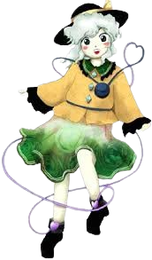

Koishi é frequentemente vista como:
Desconectada e imprevisível – ela age sem seguir lógica aparente, como se fosse guiada apenas por impulsos.🧠 Consciência e percepção
Koishi é a youkai do subconsciente:
Age sem pensar conscientemente
Não é percebida facilmente pelas outras pessoas
Toma decisões puramente instintivas
Ela existe fora da mente consciente — por isso, é difícil prever ou entender suas ações.
🎈 Comportamento livre e imprevisível
Koishi possui um jeito totalmente despreocupado:
Anda por onde quer, sem destino
Interage com os outros de forma repentina
Pode desaparecer no meio de uma conversa
Ela vive no momento, sem se prender ao passado ou ao futuro.
🌌 Natureza vazia e melancólica
Apesar de sua leveza, Koishi carrega um aspecto profundo:
Fechou o próprio terceiro olho para parar de ouvir pensamentos alheios
Perdeu parte de sua identidade consciente
Carrega uma solidão silenciosa e invisível
Sua personalidade mistura liberdade, vazio e um toque de tristeza silenciosa.
👁 Relação com os outros
Koishi se relaciona de maneira única com os demais personagens:
As pessoas muitas vezes não percebem sua presença
Se aproxima dos outros sem ser notada
Possui um laço profundo com sua irmã Satori Komeiji
Mesmo sendo esquecida facilmente, ela deixa impressões marcantes.
Youkai do Subconsciente
Koishi vive no Palácio dos Espíritos da Terra, mas passa a maior parte do tempo vagando livremente por Gensokyo, sem objetivos definidos. Ela representa o inconsciente e tudo aquilo que não é percebido pela mente.
Habitante errante de Gensokyo
Diferente de outros youkais, Koishi não possui deveres formais. Ela simplesmente explora o mundo, surgindo e desaparecendo onde menos se espera.
Manipulação do inconsciente
O poder central de Koishi é controlar o subconsciente:
Pode apagar sua própria presença da percepção dos outros
Induzir ações instintivas em quem a cerca
Agir sem ser detectada
Ignorar completamente a consciência e lógica
Esse poder a torna praticamente impossível de rastrear ou prever.
Invisibilidade mental
Koishi não se torna invisível fisicamente — ela se torna imperceptível à mente. As pessoas simplesmente deixam de notar que ela está ali.
Movimento livre e imprevisível
Ela pode surgir em qualquer lugar, atravessar ambientes e desaparecer sem deixar vestígios, como um reflexo do próprio subconsciente.
Koishi é, essencialmente, a personificação daquilo que ninguém percebe.

Espécie: Youkai
Título: A garota fechada de coração (Closed-hearted girl / 心閉ざした少女)